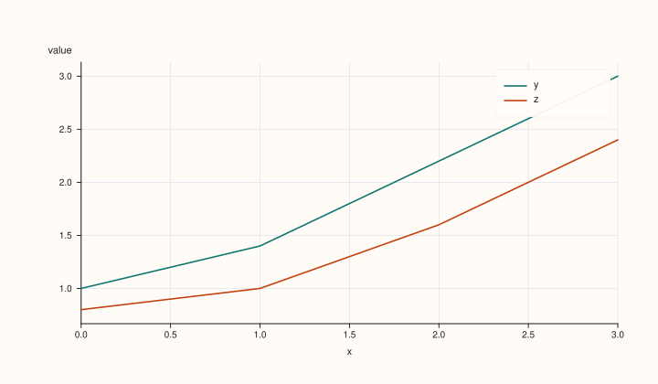
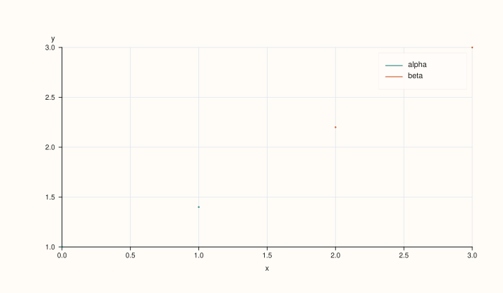
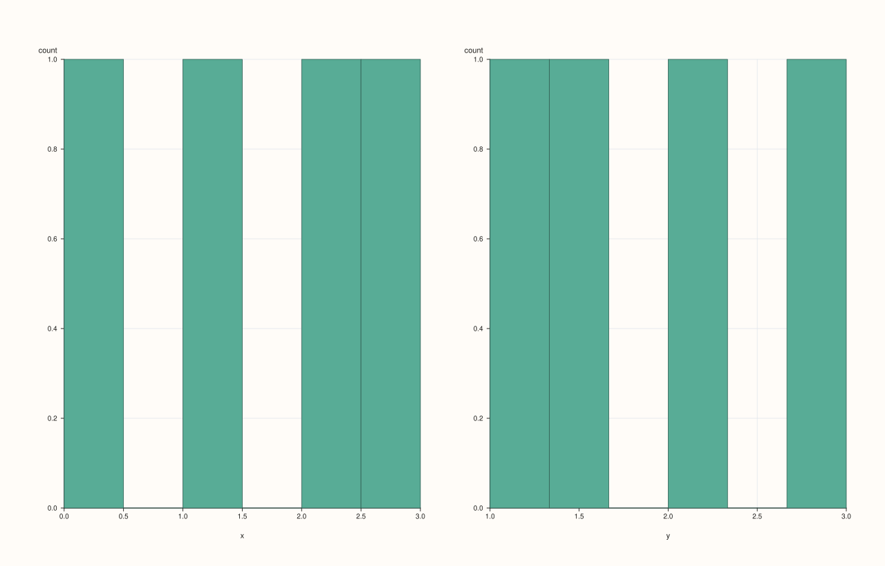
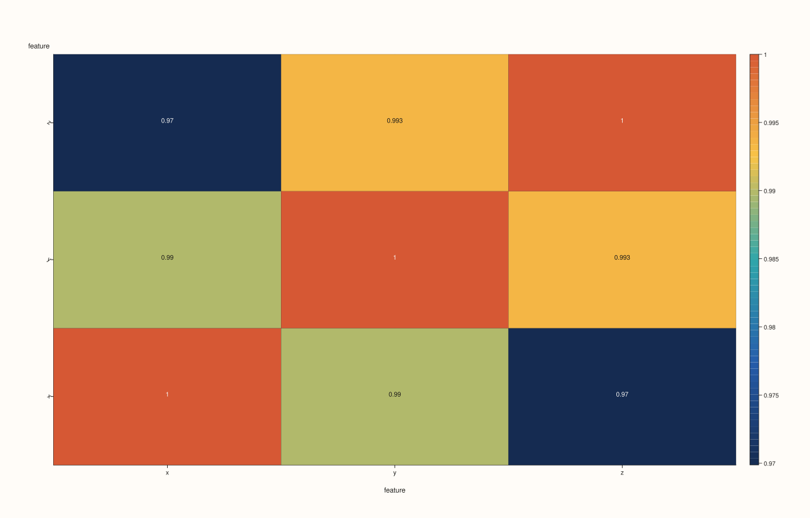
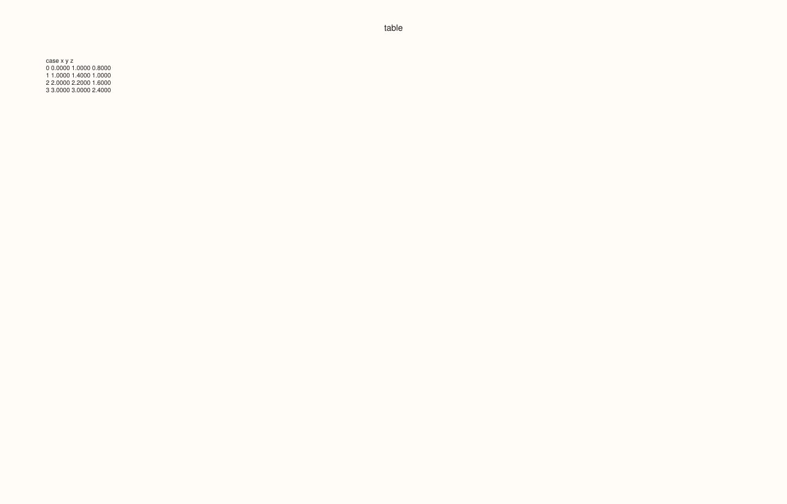
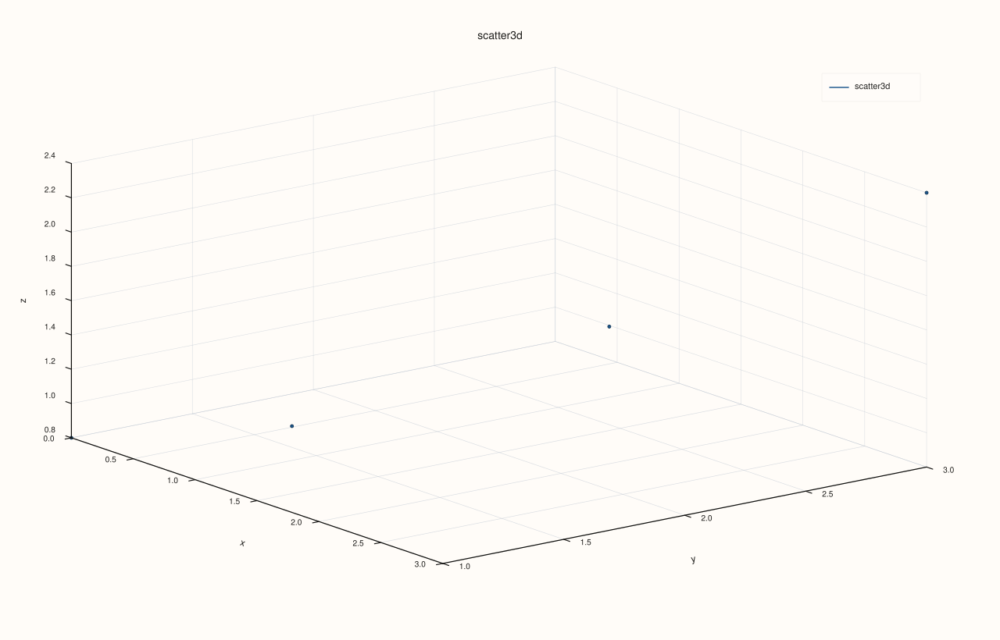
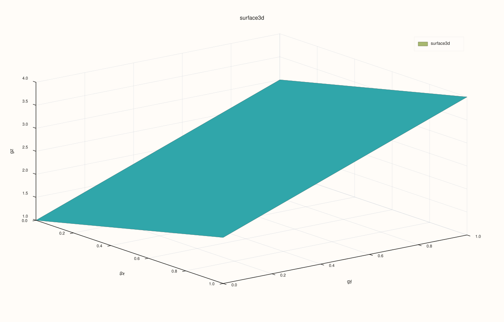

Part IX: Plotting¶
PlussMic plotting turns a table workflow into a report workflow. You clean a
DataFrame, choose the features that should become axes, groups, or values, and
receive a PlussPl Studio object that can be inspected, saved, or further
customized. This chapter teaches the table-level plotting API. It is not a
replacement for the lower-level PlussPl manual; it is the layer you use when the
data already lives in PlussMic.
The most important idea is that PlussMic does not plot directly from a CSV file,
a SQL query, or an aggregation object. It plots from a DataFrame or Atlas.
That means all the table skills from the earlier chapters still apply:
Load the data into a
DataFrame.Convert columns to the correct
Threadkind.Clean missing values deliberately.
Filter, aggregate, pivot, or assign features.
Call
plot(),plot3d(), orAtlas::plot().Save the returned
pluss::pl::Studio.
The plotting API is intentionally high-level. You ask for a line plot, histogram, heatmap, scatter matrix, or surface plot, and PlussMic builds the appropriate PlussPl trace objects.
Plotting namespaces and includes¶
Most user programs include the umbrella header:
#include <pluss/pluss.h>
The plotting classes used most often are:
pluss::table::DataFrame;
pluss::table::Thread;
pluss::table::DataFramePlotOptions;
pluss::table::LinePlotOptions;
pluss::table::ScatterPlotOptions;
pluss::table::BarPlotOptions;
pluss::table::HistPlotOptions;
pluss::table::HeatmapPlotOptions;
pluss::table::CorrHeatmapPlotOptions;
pluss::table::ScatterMatrixPlotOptions;
pluss::table::ParallelPlotOptions;
pluss::table::AndrewsCurvesPlotOptions;
pluss::table::RadvizPlotOptions;
pluss::table::LagPlotOptions;
pluss::table::ActPlotOptions;
pluss::table::BootstrapPlotOptions;
pluss::table::BriefPlotOptions;
pluss::table::Scatter3DPlotOptions;
pluss::table::Line3DPlotOptions;
pluss::table::Hist3DPlotOptions;
pluss::table::Surface3DPlotOptions;
pluss::table::Wireframe3DPlotOptions;
pluss::pl::Studio;
All DataFrame::plot() and DataFrame::plot3d() methods return
pluss::pl::Studio. A Studio is a figure container. It can have one or more
panes, and each pane can contain one or more traces.
The plotting accessors¶
There are three user-facing entry points:
auto two_d = df.plot();
auto two_d_with_options = df.plot(options);
auto three_d = df.plot3d();
auto three_d_with_options = df.plot3d(options);
auto atlas_plots = atlas.plot();
Use df.plot() for ordinary 2D charts: line, scatter, bar, histogram,
density, heatmap, correlation, scatter matrix, parallel coordinates, Andrews
curves, radviz, lag plots, autocorrelation, bootstrap plots, pie plots, and
brief table summaries.
Use df.plot3d() for 3D traces: 3D scatter, 3D line, 3D histogram, surface,
and wireframe.
Use atlas.plot() when the depth axis matters. An Atlas contains multiple
frames with compatible shape. That is useful for comparing scenarios, dates,
simulation paths, or model versions.
What PlussMic expects from the data¶
Plotting methods use Thread kinds to decide how a feature can participate in a
plot.
Thread kind |
Plotting role |
|---|---|
|
Numeric y-values, x-values, histogram input, heatmap values, correlation input, 3D coordinates. |
|
Labels, categories, hue groups, case labels, and tick labels. |
|
Labeled temporal axes; numeric coordinates are epoch nanoseconds internally. |
|
Labeled temporal axes through the contained timeline. |
Most numeric plot families require Series features. If you pass a Note
feature to a method that requires a numeric feature, PlussMic throws an error
instead of silently producing a misleading chart. A few axis paths can cast to
labels because labeled axes are expected to be textual.
The distinction matters. In a CSV file, 2026-01-01 might be inferred as text,
a timeline, or a case label depending on the loader options and schema. A line
plot will behave differently in each case:
auto by_date = df.plot().line("close", "date");
If date is a Timeline, the x-axis uses positional coordinates with rendered
date or datetime tick labels. If date is a numeric Series, the x-axis uses
the numeric values directly. If date is a Note, the x-axis uses positional
coordinates with note tick labels.
Missing values in plots¶
PlussMic keeps table-level missingness through validity masks. For plotting,
numeric missing values are converted to floating-point NaN before PlussPl
receives the values. That makes the missing point explicit to the plotting
engine while preserving the original table data.
This behavior is useful, but it is not a substitute for cleaning. Before plotting, decide whether missing values should be dropped, filled, or kept as gaps:
auto report = raw
.dropnull({"timestamp", "close"})
.fillnull(0.0, {"volume"});
auto fig = report.plot().line({"close", "volume"}, "timestamp");
Do not let plotting be the first time you think about null semantics. For a production report, missingness is part of the analysis.
Figure and axis defaults¶
DataFramePlotOptions configures the accessor. It does not mutate the frame.
You pass it once to plot(options) or plot3d(options), and every plot created
by that accessor inherits those defaults.
pluss::table::DataFramePlotOptions options;
options.default_x_feature = "date";
options.default_hue_feature = "symbol";
options.default_bins = 30;
options.width = 900.0;
options.height = 520.0;
options.use_tight_layout = true;
options.tight_layout_padding = 8.0;
auto plots = df.plot(options);
auto close = plots.line("close");
auto volume = plots.hist("volume");
auto spread = plots.scatter("bid", "ask");
In that example, line("close") uses "date" as the x feature because
default_x_feature is set. scatter("bid", "ask") uses "symbol" as the hue
feature because default_hue_feature is set and no hue feature was passed to
scatter.
DataFramePlotOptions reference¶
Option |
Default |
Meaning |
|---|---|---|
|
unset |
Feature used as x-axis when a method accepts an optional x feature and none is passed. |
|
unset |
Feature used for scatter grouping when no explicit hue feature is passed. |
|
|
Histogram bin fallback. Used when a histogram call passes |
|
|
Rendering preference for timeline labels: full datetime, date only, or time only. |
|
|
Maximum labeled ticks sampled from label-heavy axes. |
|
unset |
Explicit x tick label rotation in degrees. |
|
unset |
Explicit y tick label rotation in degrees. |
|
unset |
Explicit x-axis label rotation in degrees. |
|
unset |
Explicit y-axis label rotation in degrees. |
|
unset |
PlussPl tick format for x-axis numeric rendering. |
|
unset |
PlussPl tick format for y-axis numeric rendering. |
|
unset |
Gap between x ticks and x tick labels. |
|
unset |
Gap between y ticks and y tick labels. |
|
unset |
Gap between x-axis and x-axis label. |
|
unset |
Gap between y-axis and y-axis label. |
|
unset |
Legacy x-axis tick rotation option. Prefer |
|
current figure width |
Output figure width. |
|
current figure height |
Output figure height. |
|
|
Enables PlussPl tight layout for the returned |
|
|
Padding passed to tight layout when enabled. |
The accessor applies width, height, and tight layout to the Studio before
returning it. Axis options are applied to panes as the plot family creates them.
Inspecting returned figures¶
Because every plotting method returns a Studio, you can inspect the figure
without opening a GUI:
auto fig = df.plot().line({"close", "open"}, "date");
std::cout << "panes=" << fig.pane_count() << '\n';
if (!fig.panes().empty()) {
const auto& pane = fig.panes().front();
std::cout << "first pane traces=" << pane.trace_count() << '\n';
}
This is a useful testing technique. A documentation example, unit test, or CI job can verify that a line plot produced two trend traces without having to compare rendered pixels.
A verified plotting example¶
The following program builds a small frame, creates several 2D and 3D plots,
prints figure summaries, and saves one SVG. This is the plotting section from
the manual example program in manual/examples/plussmic_manual_examples.cpp.
std::string trace_kind_name(pluss::pl::TraceKind kind) {
switch (kind) {
case pluss::pl::TraceKind::Trend: return "Trend";
case pluss::pl::TraceKind::Cloud: return "Cloud";
case pluss::pl::TraceKind::Cloud3: return "Cloud3";
case pluss::pl::TraceKind::Fieldmap: return "Fieldmap";
case pluss::pl::TraceKind::Bucket: return "Bucket";
case pluss::pl::TraceKind::Sheet: return "Sheet";
default: return "Other";
}
}
void print_figure_summary(const std::string& label,
const pluss::pl::Studio& figure) {
std::cout << label << ": panes=" << figure.pane_count();
if (!figure.panes().empty()) {
const auto& pane = figure.panes().front();
std::cout << ", first pane traces=" << pane.trace_count();
if (!pane.traces().empty()) {
std::cout << ", first trace="
<< trace_kind_name(pane.traces().front().kind());
}
}
std::cout << '\n';
}
void plotting_example() {
auto df = DataFrame({
{"x", pluss::make_series({0.0, 1.0, 2.0, 3.0})},
{"y", pluss::make_series({1.0, 1.4, 2.2, 3.0})},
{"z", pluss::make_series({0.8, 1.0, 1.6, 2.4})},
{"grp", pluss::make_note({"alpha", "alpha", "beta", "beta"})},
});
pluss::table::DataFramePlotOptions plot_options;
plot_options.default_hue_feature = "grp";
plot_options.width = 720.0;
plot_options.height = 420.0;
plot_options.use_tight_layout = true;
auto line = df.plot(plot_options).line({"y", "z"}, "x");
auto scatter = df.plot(plot_options).scatter("x", "y");
auto hist = df.plot().hist({"x", "y"}, 6);
auto corr = df.plot().corr_heatmap({"x", "y", "z"});
auto brief = df.plot().brief({"x", "y", "z"});
auto scatter3d = df.plot3d().scatter("x", "y", "z");
auto grid = DataFrame({
{"gx", pluss::make_series({0.0, 1.0, 0.0, 1.0})},
{"gy", pluss::make_series({0.0, 0.0, 1.0, 1.0})},
{"gz", pluss::make_series({1.0, 2.0, 3.0, 4.0})},
});
auto surface = grid.plot3d().surface("gx", "gy", "gz");
print_figure_summary("line", line);
print_figure_summary("scatter default hue", scatter);
print_figure_summary("hist multi", hist);
print_figure_summary("corr heatmap", corr);
std::cout << "brief: panes=" << brief.pane_count()
<< ", caption characters="
<< brief.panes().front().caption_text().size() << '\n';
print_figure_summary("scatter3d", scatter3d);
print_figure_summary("surface3d", surface);
line.save_svg("line.svg");
std::cout << "saved svg bytes=" << std::filesystem::file_size("line.svg")
<< '\n';
}
The verified output from this build is:
=== 15 plotting ===
line: panes=1, first pane traces=2, first trace=Trend
scatter default hue: panes=1, first pane traces=2, first trace=Cloud
hist multi: panes=2, first pane traces=1, first trace=Bucket
corr heatmap: panes=1, first pane traces=1, first trace=Fieldmap
brief: panes=1, caption characters=265
scatter3d: panes=1, first pane traces=1, first trace=Cloud3
surface3d: panes=1, first pane traces=1, first trace=Sheet
saved svg bytes=9101
saved gallery files=14
The brief plot reports zero traces because it stores its table summary as
caption text on the pane rather than as a geometric trace. That is expected.
The SVG byte count is included to prove the export occurred in this build. It can change after renderer or theme changes, so use it as an example output, not as a stable cross-version test assertion.
Verified plot gallery¶
The same executable saves each figure in SVG and PNG form:
const std::vector<std::pair<std::string, const pluss::pl::Studio*>> gallery = {
{"line", &line},
{"scatter", &scatter},
{"hist", &hist},
{"corr_heatmap", &corr},
{"brief", &brief},
{"scatter3d", &scatter3d},
{"surface3d", &surface},
};
for (const auto& [name, figure] : gallery) {
figure->save_svg(name + ".svg");
figure->save_png(name + ".png", 144);
}
These are rendered artifacts from that run, not illustrative substitutes.
Two-series line plot¶

Scatter plot with hue groups¶

Multiple histograms¶

Correlation heatmap¶

Statistical brief¶

3D scatter plot¶

3D surface¶

Line plots¶
Use a line plot when the x-axis has an ordering and the y feature changes over that order. Common examples include prices over dates, cumulative quantities over event number, or metrics over training step.
auto fig = df.plot().line("close", "date");
For multiple y features, pass an initializer list:
auto fig = df.plot().line({"open", "high", "low", "close"}, "date");
Each y feature becomes one Trend trace. If there is more than one y feature,
the pane shows a legend. The y-axis label is the feature name for a single y
feature and "value" for multiple y features.
LinePlotOptions controls line style:
pluss::table::LinePlotOptions line_options;
line_options.alpha = 0.85;
line_options.line_width = 2.0;
line_options.y_limit_method = pluss::pl::LimitMethod::Padded;
auto fig = df.plot().line({"actual", "forecast"}, "date", line_options);
Option |
Default |
Meaning |
|---|---|---|
|
|
Trace opacity, clamped by styling logic. |
|
|
Stroke width. |
|
|
Optional PlussPl y-axis limit behavior. |
Line plots should usually be sorted by the x feature before plotting. PlussMic
does not reorder rows inside line().
Step plots¶
Use a step plot when values remain constant until the next observation: account balances, inventory levels, regime labels encoded numerically, or state-machine outputs.
auto fig = df.plot().step("inventory", "date");
Multiple y features are supported:
auto fig = df.plot().step({"warehouse_a", "warehouse_b"}, "date");
StepPlotOptions contains:
Option |
Default |
Meaning |
|---|---|---|
|
|
Trace opacity. |
|
|
Stroke width. |
As with line plots, PlussMic uses the row order you give it. Sort the frame if the x-axis is time-like.
Area plots¶
Use an area plot when the magnitude under the curve matters. Examples include volume, exposure, cumulative usage, or demand.
auto fig = df.plot().area("volume", "date");
For several independent filled curves:
auto fig = df.plot().area({"organic", "paid"}, "date");
AreaPlotOptions contains:
Option |
Default |
Meaning |
|---|---|---|
|
|
Fill opacity. |
|
|
Boundary stroke width. |
Stacked area plots¶
Use a stacked area plot when the y features are components of a total:
auto fig = df.plot().area_stacked({"desktop", "mobile", "tablet"}, "date");
All y features should be non-negative unless you have a very specific reason to stack signed values. The implementation builds cumulative heights from the features in the order you pass them, so the first feature is the base layer and later features stack on top.
AreaStackedPlotOptions contains:
Option |
Default |
Meaning |
|---|---|---|
|
|
Fill opacity. |
|
|
Boundary stroke width. |
Scatter plots¶
Use a scatter plot to inspect relationships between two numeric features.
auto fig = df.plot().scatter("temperature", "sales");
Add a hue feature to split the points into groups:
auto fig = df.plot().scatter("temperature", "sales", "region");
Or configure a default hue feature once:
pluss::table::DataFramePlotOptions options;
options.default_hue_feature = "region";
auto fig = df.plot(options).scatter("temperature", "sales");
When hue is used, PlussMic creates one Cloud trace per hue label. Hue features
should be Note, Timeline, or TimeIndex threads. The typical hue feature is
a Note category such as region, class, symbol, status, or cohort.
ScatterPlotOptions contains:
Option |
Default |
Meaning |
|---|---|---|
|
|
Marker opacity. |
|
|
Marker stroke width. |
Scatter plots do not aggregate. If the data has millions of points, sample or aggregate first.
Bar plots¶
Use a bar plot when one axis is categorical or discrete and the other is a numeric value.
auto fig = df.plot().bar("revenue", "region");
For grouped bars, pass several y features:
auto fig = df.plot().bar({"revenue", "cost"}, "region");
BarPlotOptions contains:
Option |
Default |
Meaning |
|---|---|---|
|
|
Adds confidence-interval whiskers for repeated x groups. |
|
|
Confidence level used when CI is enabled. |
|
|
Draws horizontal bars when true. |
A confidence-interval bar plot groups repeated x positions, computes a mean, and adds a whisker trace. This is useful when each category has multiple observations:
pluss::table::BarPlotOptions options;
options.ci_enabled = true;
options.ci_level = 0.95;
auto fig = df.plot().bar("latency_ms", "endpoint", options);
For horizontal bars:
pluss::table::BarPlotOptions options;
options.horizontal = true;
auto fig = df.plot().bar("revenue", "region", options);
Horizontal bars are often easier to read when labels are long.
Stacked bar plots¶
Use a stacked bar plot when each y feature is part of the same total:
auto fig = df.plot().bar_stacked({"new", "returning", "reactivated"}, "month");
BarStackedPlotOptions contains:
Option |
Default |
Meaning |
|---|---|---|
|
|
Bar opacity. |
|
|
Boundary stroke width. |
As with stacked area plots, feature order matters. Put the most foundational or largest component first if you want the chart to read naturally.
Box plots¶
Use a box plot to compare distributions across numeric features.
auto fig = df.plot().box({"control", "treatment"});
If you pass no features, PlussMic uses all numeric Series features:
auto fig = df.plot().box();
BoxPlotOptions contains:
Option |
Default |
Meaning |
|---|---|---|
|
|
Trace opacity. |
|
|
Stroke width. |
Box plots ignore non-finite numeric values when building the distribution.
Violin plots¶
Use a violin plot to compare distributions while showing density shape.
auto fig = df.plot().violin({"control", "treatment"});
You can also plot one value feature grouped by a category:
auto fig = df.plot().violin("latency_ms", "endpoint");
The grouped form is usually what you want for long-form data. The multi-feature form is useful for wide data where each feature already represents one group.
ViolinPlotOptions contains:
Option |
Default |
Meaning |
|---|---|---|
|
|
Trace opacity. |
|
|
Stroke width. |
|
|
Violin width. |
|
|
Kernel bandwidth adjustment. |
|
|
Density extension beyond observed data. |
|
|
Violin scaling mode. |
|
|
Inner summary drawing. |
|
|
Full or sided violin rendering. |
Use box plots for a compact statistical summary. Use violin plots when the shape of the distribution matters.
Histograms¶
Use a histogram to inspect a numeric feature’s distribution.
auto fig = df.plot().hist("latency_ms", 30);
For several features, pass a feature list:
auto fig = df.plot().hist({"latency_ms", "queue_ms"}, 30);
The multi-feature histogram creates one pane per feature, which keeps each
distribution readable. If you call hist(30) with only a bin count, PlussMic
uses all numeric Series features:
auto fig = df.plot().hist(30);
HistPlotOptions contains:
Option |
Default |
Meaning |
|---|---|---|
|
|
Number of histogram bins. |
|
|
Bucket opacity. |
|
|
Bucket boundary width. |
You can pass the option object instead of a raw bin count:
pluss::table::HistPlotOptions options;
options.bins = 40;
options.alpha = 0.8;
auto fig = df.plot().hist("latency_ms", options);
Density plots¶
Use a density plot when you want a smooth distribution estimate.
auto fig = df.plot().density("latency_ms", 256);
For several features:
auto fig = df.plot().density({"latency_ms", "queue_ms"}, 256);
DensityPlotOptions contains:
Option |
Default |
Meaning |
|---|---|---|
|
|
Number of evaluation points in the density curve. |
|
|
Trace opacity. |
|
|
Curve stroke width. |
Histograms show counts in bins. Density plots show a smoothed estimate. Use both when you are validating a statistical report.
Pie plots¶
Use a pie plot when values are parts of a whole and the number of categories is small:
auto fig = df.plot().pie("revenue", "region");
value_feature must be numeric. label_feature is optional. If the label
feature is omitted, PlussMic uses generated labels.
PiePlotOptions controls label text:
Option |
Default |
Meaning |
|---|---|---|
|
|
Include the category label. |
|
|
Include percent of total. |
|
|
Include raw numeric value. |
|
|
Decimal precision for percentages. |
|
`” |
“` |
Pie charts are easy to overuse. Prefer a bar chart when there are many categories or when users need to compare values precisely.
Heatmaps¶
PlussMic has two heatmap styles:
Feature matrix heatmaps.
Pivot heatmaps.
A feature matrix heatmap uses several numeric features as columns and cases as rows:
auto fig = df.plot().heatmap({"bid", "ask", "mid"});
A pivot heatmap uses three columns: row category, column category, and numeric value:
auto fig = df.plot().heatmap(
"maturity",
"delta_bucket",
"implied_vol",
DataFrame::GroupOp::Mean);
The pivot form groups repeated (case_feature, feature_feature) pairs using the
requested DataFrame::GroupOp. The default operation is mean.
HeatmapPlotOptions contains:
Option |
Default |
Meaning |
|---|---|---|
|
|
Print cell values on the heatmap. |
|
|
Show the color scale guide. |
|
|
Use borderless cells. |
Use annotation only when the heatmap is small enough for text to remain legible.
Correlation heatmaps¶
Use corr_heatmap() to visualize pairwise correlations among numeric features:
auto fig = df.plot().corr_heatmap({"open", "high", "low", "close"});
If you pass no features, PlussMic uses all numeric Series features:
auto fig = df.plot().corr_heatmap();
CorrHeatmapPlotOptions contains:
Option |
Default |
Meaning |
|---|---|---|
|
|
Print correlation values in cells. |
|
|
Show the color scale guide. |
|
|
Use borderless cells. |
The plotting method uses the DataFrame correlation implementation and then renders the selected features as a square matrix.
Scatter matrices¶
Use a scatter matrix to inspect pairwise relationships among several numeric features:
auto fig = df.plot().scatter_matrix({"sepal_length", "sepal_width",
"petal_length", "petal_width"});
The default full matrix can become large. For compact reports, render only the lower triangle:
pluss::table::ScatterMatrixPlotOptions options;
options.corner = true;
auto fig = df.plot().scatter_matrix({"x", "y", "z"}, options);
You can also configure the underlying PlussPl pair plot options:
pluss::table::ScatterMatrixPlotOptions options;
options.pair.triangle = pluss::table::ScatterMatrixTriangle::Lower;
options.pair.auto_tick_decimals = 1;
auto fig = df.plot().scatter_matrix({"x", "y", "z"}, options);
ScatterMatrixPlotOptions contains:
Option |
Default |
Meaning |
|---|---|---|
|
|
Convenience flag that switches a full matrix to the lower triangle. |
|
default pair options |
Underlying PlussPl pair plot options. |
Scatter matrices require at least two numeric features.
Parallel coordinates¶
Use parallel coordinates when you want to compare rows across many numeric features:
auto fig = df.plot().parallel({"a", "b", "c", "d"}, "class");
Each sampled case becomes a polyline across feature axes. The optional class feature groups or colors the lines.
ParallelPlotOptions contains:
Option |
Default |
Meaning |
|---|---|---|
|
empty |
Axis labels. Empty means use feature names. |
|
|
Normalize feature scales before plotting. |
|
|
Maximum rows drawn. |
|
|
Line opacity. |
|
|
Line width. |
|
|
Show axis/grid guides. |
|
|
Show class legend. |
Keep normalize enabled unless all features already share the same units.
Andrews curves¶
Andrews curves turn each row into a curve derived from the numeric feature values. They are useful for spotting clusters and outliers:
auto fig = df.plot().andrews_curves({"a", "b", "c", "d"}, "class");
AndrewsCurvesPlotOptions contains:
Option |
Default |
Meaning |
|---|---|---|
|
empty |
Feature labels. Empty means use feature names. |
|
|
Normalize feature scales before plotting. |
|
|
Evaluation points per curve. |
|
|
Maximum rows drawn. |
|
|
Curve opacity. |
|
|
Curve width. |
|
|
Show grid. |
|
|
Show class legend. |
Andrews curves become unreadable quickly. Use sampling and class grouping.
Radviz¶
Radviz places features around a circle and positions rows by their normalized feature values:
auto fig = df.plot().radviz({"a", "b", "c", "d"}, "class");
RadvizPlotOptions contains:
Option |
Default |
Meaning |
|---|---|---|
|
empty |
Anchor labels. Empty means use feature names. |
|
|
Normalize feature values before layout. |
|
|
Maximum rows drawn. |
|
|
Marker area. |
|
|
Marker stroke width. |
|
|
Show circular guide/grid. |
|
|
Show feature anchors. |
|
|
Show class legend. |
Radviz is best for exploratory data analysis, not precise numeric reading.
Lag plots¶
Use a lag plot to compare a feature against a shifted version of itself:
auto fig = df.plot().lag("close");
The default lag is one row. Increase it when the domain has a meaningful period:
pluss::table::LagPlotOptions options;
options.lag = 7;
options.max_points = 2500;
auto fig = df.plot().lag("close", options);
LagPlotOptions contains:
Option |
Default |
Meaning |
|---|---|---|
|
|
Row lag used for the shifted comparison. |
|
|
Maximum points drawn. |
|
|
Marker area. |
|
|
Marker stroke width. |
Sort the frame before lag plotting. A lag plot on unsorted time series data is usually meaningless.
Autocorrelation plots¶
Use act() to plot autocorrelation-like behavior across lags:
auto fig = df.plot().act("close");
ActPlotOptions contains:
Option |
Default |
Meaning |
|---|---|---|
|
|
Maximum lag drawn. |
|
|
Show confidence guide. |
|
|
Confidence level for the guide. |
|
|
Spike trace width. |
This plot family emits a Spike trace first.
Bootstrap plots¶
Use bootstrap() to visualize the sampling distribution of a statistic:
auto fig = df.plot().bootstrap("latency_ms");
Configure the statistic and simulation parameters:
pluss::table::BootstrapPlotOptions options;
options.samples = 1000;
options.sample_size = 0;
options.seed = 42;
options.bins = 30;
options.statistic = pluss::table::BootstrapStatistic::Median;
auto fig = df.plot().bootstrap("latency_ms", options);
sample_size = 0 means use the available sample size. seed makes the
bootstrap reproducible.
BootstrapPlotOptions contains:
Option |
Default |
Meaning |
|---|---|---|
|
|
Number of bootstrap samples. |
|
|
Sample size per bootstrap draw; zero means default to the data size. |
|
|
Random seed. |
|
|
Histogram bins. |
|
|
|
|
|
Bucket stroke width. |
Brief table plots¶
brief() creates a figure containing a compact table summary as pane caption
text:
auto fig = df.plot().brief({"city", "revenue", "margin"});
Because it is caption text rather than a geometric chart, the pane can have zero traces. That is normal.
BriefPlotOptions contains:
Option |
Default |
Meaning |
|---|---|---|
|
|
Summary title. |
|
|
Numeric precision. |
|
|
Include feature header. |
|
|
Maximum rows displayed. |
|
|
Transpose the table summary. |
|
|
Include case labels. |
|
|
Split features into multiple tables; zero means no forced split. |
|
|
Tables per row when split. |
|
|
Space between split tables. |
You can also add a brief summary to an existing figure:
auto fig = df.plot().line("revenue", "date");
df.plot().brief(fig, {"revenue"});
Use this for report figures where the chart and a small tabular summary belong together.
Auto plots¶
auto_plot() chooses a simple plot based on the selected numeric features:
auto fig = df.plot().auto_plot({"x", "y", "z"});
Auto plotting is useful for exploration and examples. For production reports, prefer an explicit plot family so a schema change does not silently change the visual design.
3D plotting¶
plot3d() returns DataFramePlot3DAccessor. It shares the top-level
DataFramePlotOptions for figure size and layout, then each 3D method accepts
family-specific options.
3D scatter¶
Use 3D scatter for point clouds:
auto fig = df.plot3d().scatter("x", "y", "z");
Optional size and color features are supported:
auto fig = df.plot3d().scatter("x", "y", "z", "market_cap", "sector_code");
Scatter3DPlotOptions contains:
Option |
Default |
Meaning |
|---|---|---|
|
default scene options |
Camera, lighting, theme, grid, and scene presets. |
|
default trace options |
Trace preset, shade, material, line width, transparency. |
|
|
Marker size when no size feature is passed. |
3D line¶
Use 3D line plots for paths:
auto fig = df.plot3d().line("x", "y", "z");
Line3DPlotOptions contains scene and trace option groups.
3D histogram¶
Use a 3D histogram for bivariate density or counts:
pluss::table::Hist3DPlotOptions options;
options.bins_x = 30;
options.bins_y = 24;
options.normalize = true;
auto fig = df.plot3d().hist("x", "y", options);
Hist3DPlotOptions contains:
Option |
Default |
Meaning |
|---|---|---|
|
|
Number of x bins. |
|
|
Number of y bins. |
|
|
Normalize counts. |
|
|
Smooth the histogram surface. |
|
|
Number of smoothing passes. |
|
|
Render as a surface. |
|
|
Render as a wireframe. |
|
default scene options |
Camera, lighting, theme, grid, and scene presets. |
|
default trace options |
Trace preset, shade, material, line width, transparency. |
Surfaces and wireframes¶
Use a surface when x and y coordinates define a grid or a pivotable set of points:
auto fig = df.plot3d().surface("strike", "maturity", "implied_vol");
Use a wireframe for the same data when the grid structure matters more than the filled surface:
auto fig = df.plot3d().wireframe("strike", "maturity", "implied_vol");
Both methods accept a DataFrame::GroupOp for repeated coordinate pairs:
auto fig = df.plot3d().surface(
"strike",
"maturity",
"implied_vol",
DataFrame::GroupOp::Mean);
Surface3DPlotOptions and Wireframe3DPlotOptions contain scene and trace
option groups.
3D scene and trace options¶
The 3D option structs share these nested groups:
pluss::table::Plot3DSceneOptions scene;
pluss::table::Plot3DTraceOptions trace;
Plot3DSceneOptions can hold:
Option |
Meaning |
|---|---|
|
PlussPl scene preset. |
|
3D theme preset. |
|
Camera preset. |
|
Full camera options. |
|
Lighting options. |
|
Grid style override. |
Plot3DTraceOptions can hold:
Option |
Meaning |
|---|---|
|
Trace preset. |
|
Shading mode. |
|
Lighting mode. |
|
Material profile. |
|
Line width override. |
|
Transparency override. |
Use the presets for most work. Drop to full PlussPl configuration only when a publication or product UI needs exact visual control.
Atlas plotting¶
An Atlas is a stack of frames. Plotting an atlas is useful when the depth
dimension is meaningful:
Thread scenarios = pluss::make_note({"base", "stress", "upside"});
pluss::table::Atlas atlas({base, stressed, optimistic}, scenarios);
auto fig = atlas.plot().line("revenue", "date");
Good atlas plotting cases include:
scenarios in risk analysis;
repeated simulations;
one frame per model version;
one frame per date or reporting period;
one frame per cohort.
The same data hygiene rules apply. The frames should have compatible features,
case counts, and feature meanings. If the depth labels are meaningful, keep them
as Note, Timeline, or TimeIndex data so plots and legends can explain the
depth axis.
Exporting plots¶
The returned Studio can be saved directly:
auto fig = df.plot().line("close", "date");
fig.save_svg("close.svg");
fig.save_pdf("close.pdf");
fig.save_png("close.png", 180);
Use SVG for documentation, web pages, and source-controlled report assets. Use PDF for print workflows. Use PNG when the target system cannot render vector graphics or when you need a fixed raster result.
You can also get serialized output in memory:
auto svg = fig.to_svg();
auto pdf = fig.to_pdf();
For reliable report builds, write plots into a generated output directory:
const std::filesystem::path out_dir = "build/report-plots";
std::filesystem::create_directories(out_dir);
df.plot().line("close", "date").save_svg((out_dir / "close.svg").string());
df.plot().corr_heatmap({"open", "high", "low", "close"})
.save_svg((out_dir / "ohlc-corr.svg").string());
Treat exported plots as build artifacts unless your project intentionally checks them in.
Choosing the right plot¶
Task |
Good first plot |
|---|---|
One value over ordered x |
|
Value changes that hold until next event |
|
Magnitude over ordered x |
|
Components of a total over ordered x |
|
Relationship between two numeric features |
|
Numeric value per category |
|
Components per category |
|
Compare distributions across features |
|
Inspect one distribution |
|
Values over two categorical axes |
pivot |
Pairwise correlations |
|
Pairwise relationships among many features |
|
Rows across many numeric dimensions |
|
Cluster/outlier exploration |
|
Time-series lag behavior |
|
Sampling distribution |
|
Compact table-in-figure summary |
|
3D point cloud |
|
3D path |
|
3D bivariate counts |
|
3D grid surface |
|
3D grid skeleton |
|
Production plotting checklist¶
Before sending a plot to users, check:
The frame is sorted when the plot depends on order.
Missing values are intentionally dropped, filled, or left as gaps.
Numeric features are really
Seriesthreads.Categorical labels are
Notethreads or are safely convertible to labels.Large datasets are sampled or aggregated before high-density plots.
Long category labels use rotated ticks or horizontal bars.
width,height, and tight layout are set for the target document.Export format matches the destination: SVG/PDF for vector, PNG for raster.
The plot can be regenerated from source data and code.
Common plotting failures¶
Missing feature names¶
This fails:
auto fig = df.plot().scatter("x", "missing_feature");
The accessor asks the DataFrame for "missing_feature" and the frame throws.
Check df.features() before building dynamic plotting code.
Non-numeric features in numeric methods¶
This fails when status is a Note:
auto fig = df.plot().hist("status");
A histogram needs numeric values. Use bar() on an aggregated count table, or
encode the category intentionally before plotting numeric distributions.
Unsorted time series¶
This compiles but may lie:
auto fig = df.plot().line("close", "date");
If df is not sorted by date, the line connects points in row order. Sort
first:
auto sorted = df.arrange({DataFrame::ArrangeSpec{"date", true, true}});
auto fig = sorted.plot().line("close", "date");
Too many labels¶
When an axis has labels, PlussMic samples labeled ticks using
max_labeled_ticks. If you still have crowding, rotate ticks or aggregate:
pluss::table::DataFramePlotOptions options;
options.max_labeled_ticks = 8;
options.x_tick_rotation_deg = 45.0;
auto fig = df.plot(options).bar("revenue", "customer");
Too many points¶
Scatter plots and high-dimensional plots can become unreadable and slow. Use domain-aware filtering:
auto sample = df.query("event_rank < 5000");
auto fig = sample.plot().scatter("x", "y", "class");
Or aggregate:
auto grouped = df.group()
.by({"region"})
.agg({{"revenue_sum", "revenue", DataFrame::GroupOp::Sum}});
auto fig = grouped.plot().bar("revenue_sum", "region");
When to use PlussPl directly¶
Use the DataFrame plotting API when the chart maps directly from table features. Use PlussPl directly when you need:
custom multi-pane layouts not represented by the DataFrame API;
manual trace construction;
custom annotations beyond
brief();precise theme and mark control;
composition of non-table graphics with table plots.
A good workflow is to use PlussMic for data preparation, then pass the resulting vectors, labels, or summaries into PlussPl for final composition.